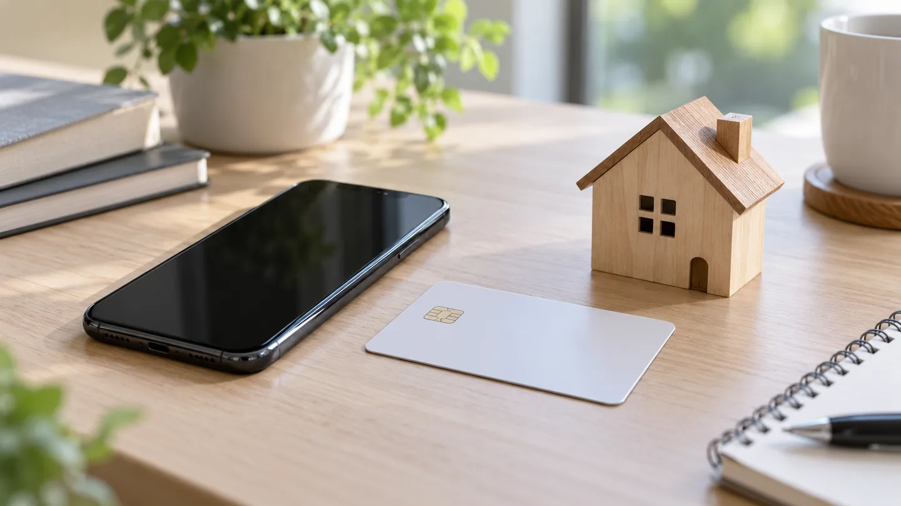
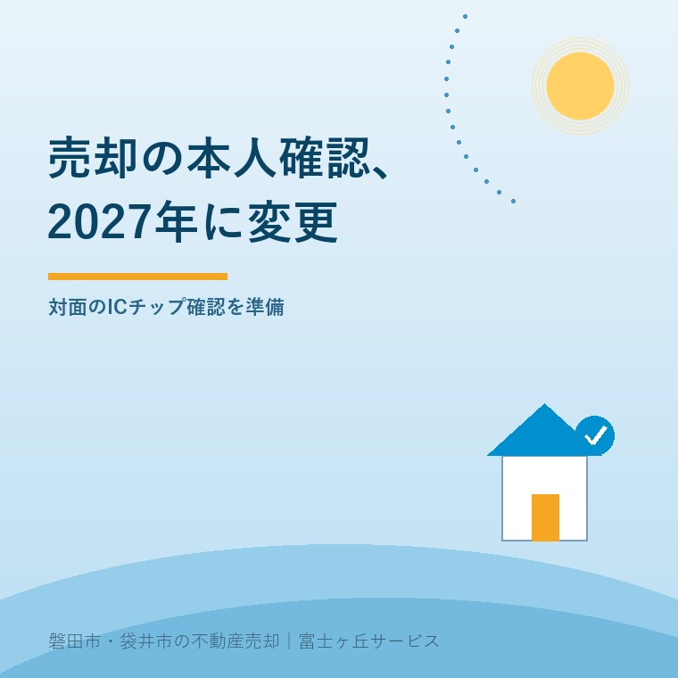

不動産売却の本人確認、2027年の対面変更

2026年10月3日｜カテゴリ：売却実務・本人確認

この記事の要点
2027年に実家を売るなら、本人確認のためスマホが必要なの？
2027年4月1日から、対面の提示による本人確認で、ICチップ情報を持つ書類は読み取り確認が加わります。売主全員にスマホの購入を求める説明ではありません。磐田市・袋井市・森町では、介護施設の運営から不動産事業を始めた富士ヶ丘サービスのような地域密着の会社に相談する選択肢があります。
大石浩之（磐田市／不動産業）です。2027年に実家を売る予定なら、本人確認の準備も日程に入れておきたいところです。国土交通省は2026年6月の資料で、翌年4月からの確認方法の変更を案内しています。契約日に初めて聞くより、持参する書類を早くそろえる方が家族の負担を減らせます。
本記事は2026年10月3日に確認した資料のうち、個人の対面取引とICチップ情報の読み取りに絞ります。非対面や法人の方法を一つに扱うと、何を用意するかがかえって曖昧になるためです。2026年時点の手続きと2027年の変更を分けて読みます。
2027年4月1日から、券面に加えてICチップを確認
国土交通省の説明資料6頁は、2027年4月1日から、ICチップ情報が格納された本人確認書類について、情報の読み取り確認が加わると説明しています。根拠として犯罪収益移転防止法施行規則の改正を挙げています。本人確認方法のうち、対面で原本を提示する方法に関する説明です。
現行の提示による方法では、顔写真付き本人確認書類の原本を受け取り、券面の記載事項や顔写真を確かめます。改正後は、チップ内の情報が表示できるか、券面の情報と一致しているかなども確認します。カードの表面だけを見て終える手順から、確認の工程が増えるということです。
国土交通省は偽造された書類を使う取引への対応として説明しています。ただし、この記事では特定地域で偽造が起きているとは述べません。磐田・袋井だけの新しいルールでもありません。全国の案内を、自分の売却予定と仲介会社の手順に当てはめて準備します。
私は、目で見た印象だけに頼らず、書類の情報を照合する方向を評価します。売主の本人確認を丁寧に行うことは、買主だけでなく、名義を悪用されたくない所有者を守る仕事でもあります。確認に使う道具が増えることには意味があります。
その上で、不動産会社の準備を売主へ丸投げしないでほしいと思います。「制度が変わるので何か用意してください」では動けません。使う確認方法、必要な原本、当日の流れを会社側が説明してこそ、道具が実務で役に立ちます。
売主がそろえるものは、仲介会社の採用する方法で確認
売主の書類準備は、仲介会社へ「個人の対面確認を、どの方法で行う予定か」と聞くところから始めるのが私の提案です。国土交通省資料2頁は対面、3頁は非対面の方法を扱っています。本人確認という名前が同じでも、必要な組合せまで一律とは考えません。
| 事前に伝えること | 確認してもらうこと | 準備の注意 |
|---|---|---|
| 対面で来店する予定 | 使用する本人確認方法 | 原本の種類を指定してもらう |
| 持っている書類の種類 | その方法で利用できるか | 有効期限や記載内容を確認 |
| 住所・氏名が変わった | 追加資料や更新の必要性 | 当日まで不一致を放置しない |
| 家族が代理する予定 | 本人と代理人それぞれの資料 | 委任の確認と分けて準備 |
運転免許証やマイナンバーカードは、資料に挙がる顔写真付き書類の例です。ただし、「この一枚を持てば、どんな取引でもすべて終わる」とは案内しません。個別の書類の状態や、会社が用いる方法によって追加確認があり得るため、何を持っているかを事前に伝えます。
売主側で確認しておきたいのは、氏名、現住所、有効期限などです。長く使っていなかった書類を、契約の前夜に初めて探すと、記載の更新が必要でも日程を組めません。書類を確認する日と契約日を分けるだけでも、やり直しの余地ができます。
読み取りがうまくいかない場合の対応も、先に聞いておきます。カードの状態や機器の都合をその場で解決できるとは限りません。別の確認方法や追加の準備が必要かは事業者に確認し、画面が出なかったから即座に売却できない、と家族だけで結論を出さないようにします。
パスワードなしの紹介を、全手続き共通の話にしない
国土交通省資料6頁は、デジタル庁のマイナンバーカード対面確認アプリを紹介しています。事業者の担当者等がスマートフォンなどへ導入すると、顧客のカードのICチップ情報をパスワードなしで表示できるという説明です。売主全員にスマートフォンの購入を求める記載ではありません。
ここは準備の負担を左右します。高齢の親がスマートフォンを使えないから、新しく契約しなければ不動産を売れない。そう短絡する必要はありません。紹介されている仕組みで機器を用意する主体と、本人確認書類を示す主体を分けて読みます。
一方、パスワードなしという説明を、すべての確認アプリや電子契約の話へ広げません。同じマイナンバーカードを使う場面でも、目的と方法が違えば必要な準備も変わります。暗証番号を忘れた場合は、使う予定の手続きを仲介会社に伝え、その方法で支障があるかを確かめます。
私は、売主へ一律にアプリの操作を練習してもらうより、担当者が手順を説明できる状態を先に作るべきだと考えます。端末を準備する側が曖昧なまま家族へ宿題を渡すと、操作の手伝いをする人まで必要になってしまいます。
本人確認のために何を読み取り、どんな記録を残すのかも説明を求めて構いません。本記事の図は実物のカード情報を載せず、確認の準備を示すイメージにしています。相談の最初からカード画像や番号を無差別に送るのではなく、提出方法と提出先を合わせてから渡します。
磐田・袋井で親の売却を手伝う家族が確認すること
磐田市・袋井市の実家を親の施設入居後に売る場合、本人の来店が可能か、家族がどこまで手伝うかを先に整理するのが私の提案です。対面での読み取り方法を知ることと、親が売却を理解して意思を示せるかを確認することは別の作業です。
私はこう考えます。カードを機械で読めたら、売却の確認は終わり。それは違う。道具が示す情報と、家を売る本人の気持ちは同じではありません。効率化には賛成ですが、売主の意思や代理の権限まで機械任せにする仕事にはしたくありません。
私にも迷いがあります。家族の移動を減らしたい一方で、確認を短くしすぎて本人の理解を置き去りにしたくない。だから、一度の面談へ書類確認、契約説明、家族の相談を全部詰め込むべきかは、事情を聞いて判断します。速さだけでよい段取りとは決めません。
国土交通省の資料には、代理人が立つ場合は、代理人についても本人特定事項等の確認が必要との注記があります。「子が身分証を出せば親の分は不要」という意味ではありません。本人と代理人の確認に加えて、どんな権限で代理するかも整理します。
施設入居後の準備は、老人ホーム入居後の売却と本人確認も参照できます。代理を予定しているなら、売却の委任とオンライン説明の区別も確認します。本人の意思、代理権、登記の個別判断は専門家に確認を。
仲介会社での確認を一度終えたことだけで、司法書士や金融機関等の確認も省けるとは考えません。提出先が違えば、目的と必要資料をそれぞれ合わせます。誰から何を求められているかを一枚に並べれば、同じ書類を探す家族の手間も減らせます。
契約直前に慌てないための今日の連絡
今日できることは、売却予定が2027年4月以降なら、その時期を仲介会社へ伝えることです。国土交通省資料は2026年6月表記ですが、公表の日までは確認できません。2027年4月1日という施行日と資料の作成年月を混同せず、実際の手続き前に案内の更新も確認します。
- 対面か非対面か、予定する確認方法を聞く。
- 持参する原本と追加資料の名称を確認する。
- 端末の準備や操作を誰が担うか聞く。
- 代理の場合は、本人・代理人・権限の資料を分ける。
売買の最後の段階は、決済当日のお金と書類の流れへつながります。本人確認の準備を決済当日の持ち物確認だけに押し込まず、予定が見えた段階で相談します。書類が整ったことと、家を売る決断を同時にする必要はありません。
富士ヶ丘サービスは、介護と不動産を一体で相談し、磐田・袋井の家族が困らない売却を支援します。私は、新しい道具を使うほど、人が説明する責任をはっきりさせるよう案内します。
よくある質問
手続きと準備で迷う点を整理します。
- 2027年4月から、売主全員にスマートフォンが必要ですか？
- 国土交通省の資料は、対面でのICチップ情報の読み取りについて、事業者の担当者がスマートフォン等に確認アプリを入れる方法を紹介しています。売主全員が端末を購入する説明ではありません。対面か非対面か、仲介会社がどの確認方法を使うかを先に聞き、持参する本人確認書類の原本をそろえます。
- 暗証番号を忘れていても、必ず本人確認できますか？
- 資料はマイナンバーカード対面確認アプリで、カードのICチップ情報をパスワードなしに表示できると説明しています。これは紹介された方法の話で、すべての書類、アプリ、電子契約で暗証番号が不要という意味ではありません。利用予定の方法、書類の状態、必要な準備を仲介会社へ具体的に確認してください。
- 親の代理で子が契約するなら、子の書類だけで足りますか？
- 資料には、代理人がいる場合は代理人についても本人特定事項等の確認が必要とあります。本人の確認が子の確認へ置き換わるという意味ではありません。所有者と代理人それぞれの必要書類、代理権を示す資料を事前に確認します。本人の売却意思、代理権、登記手続きの個別判断は専門家に確認を。

この記事を書いた人：大石浩之（磐田市／不動産業・宅地建物取引士）
富士ヶ丘サービス株式会社。介護施設の運営から不動産事業を始め、磐田市・袋井市・森町で、介護と相続、実家の売却を一体で相談できる窓口を設けています。家族が困らない売却のため、資料と現地の条件を一件ずつ整理します。著者プロフィール
本記事は2026年10月3日時点の公開情報と筆者の意見です。制度・数値・手続き・契約条件は変更されることがあります。税務・登記・相続・重要事項説明・契約などの個別判断は、税理士・司法書士・弁護士などの専門家に確認を。